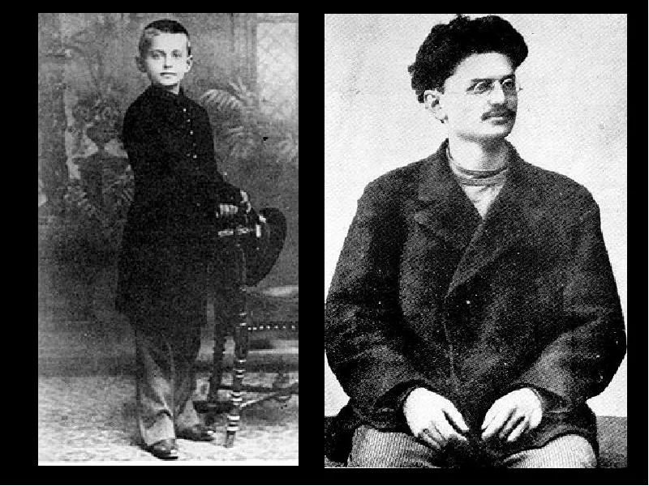
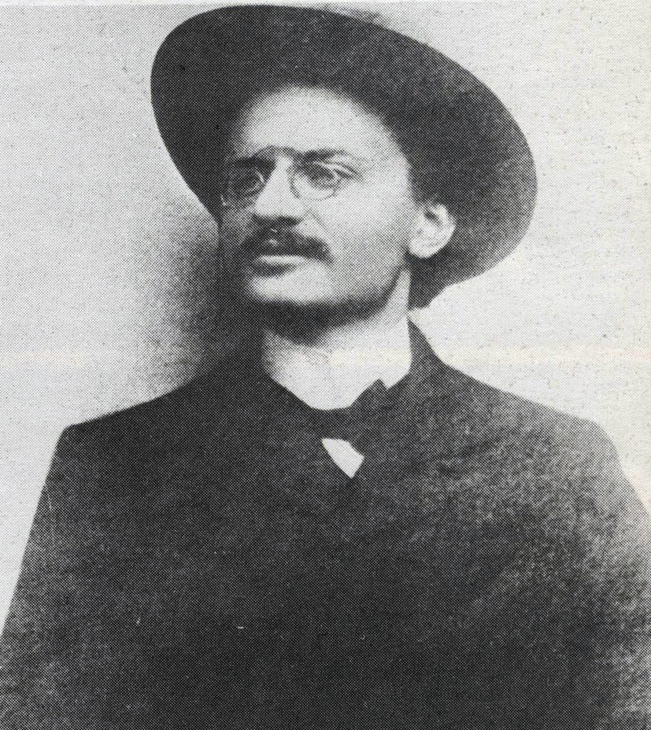
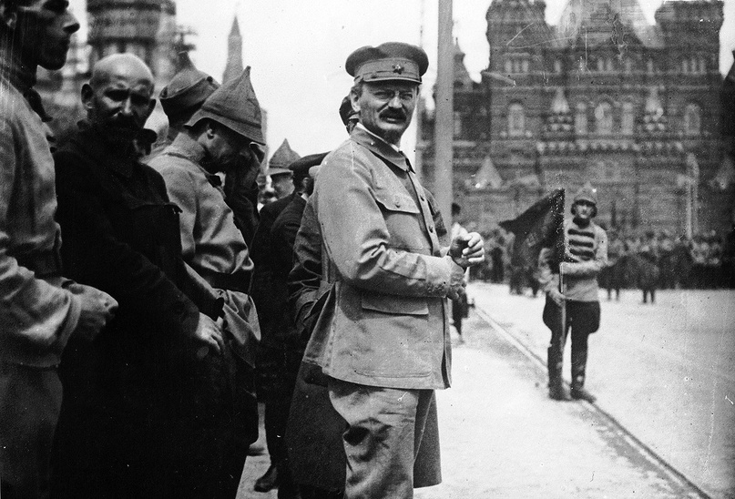
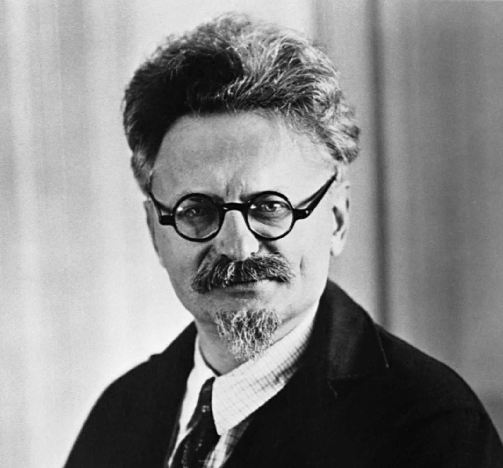

Лев Давидович Троцкий
1879 - 1940

Ранние годы (1879-1898)
Лев Давидович Троцкий (настоящее имя Лейба Давидович Бронштейн) родился 7 ноября 1879 года в селе Яновка Херсонской губернии в зажиточной еврейской семье землевладельца Давида Бронштейна. Несмотря на относительный достаток, детство Троцкого прошло в условиях сельской изоляции.
В 1888 году он поступил в Одесское реальное училище св. Павла, где проявил выдающиеся способности. В 1896 году, переехав в Николаев, Троцкий знакомится с марксистскими идеями и включается в революционную деятельность.
Революционная деятельность (1898-1917)
Первые аресты и ссылка
В 1898 году Троцкий был арестован за участие в "Южно-русском рабочем союзе". После двух лет тюрьмы был сослан в Сибирь, где женился на Александре Соколовской. В 1902 году бежал из ссылки, используя поддельный паспорт на имя "Троцкий".
Эмиграция и 1905 год
В Лондоне познакомился с Лениным. Во время революции 1905 года вернулся в Россию, стал председателем Петербургского совета рабочих депутатов. После поражения революции снова арестован и сослан, но по пути в Сибирь бежал.
Межреволюционный период
С 1907 по 1917 год Троцкий находился в эмиграции (Вена, Париж, Нью-Йорк). Разработал теорию "перманентной революции", выступал против Первой мировой войны.
На вершине власти (1917-1927)
Октябрьская революция
Вернувшись в Россию после Февральской революции, Троцкий стал ключевой фигурой Октябрьского переворота. Как председатель Петроградского совета, непосредственно руководил захватом власти большевиками.
Создание Красной Армии
На посту наркома по военным делам Троцкий создал Красную Армию практически с нуля. Его знаменитый бронепоезд стал символом революционной мобильности.
Борьба за власть
После смерти Ленина в 1924 году Троцкий вступил в борьбу со Сталиным. Его критика бюрократизации партии и концепция "мировой революции" противоречили сталинской теории "социализма в одной стране".
Изгнание и смерть (1927-1940)
Высылка из СССР
В 1927 году исключён из партии, в 1928 — выслан в Алма-Ату, в 1929 — выдворен из СССР. Жил в Турции, Франции, Норвегии, Мексике.
Основные работы в изгнании
- "История русской революции" (1930)
- "Преданная революция" (1936)
- "Сталинская школа фальсификаций" (1937)
Убийство
20 августа 1940 года агент НКВД Рамон Меркадер смертельно ранил Троцкого ударом ледоруба по голове. Умер на следующий день. Его последние слова: "Сталин наконец достиг того, чего всегда хотел".
Наследие
Идеи Троцкого (троцкизм) продолжают влиять на левые движения. Его анализ сталинизма и теория перманентной революции остаются актуальными для понимания политики XX века.